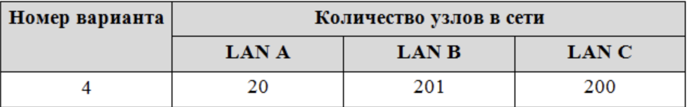
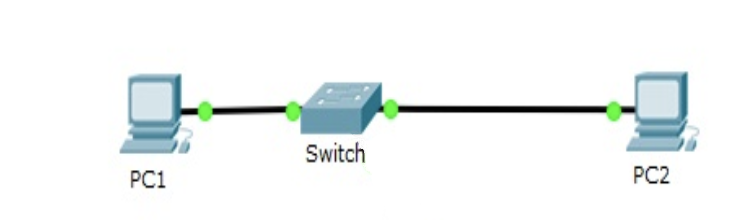
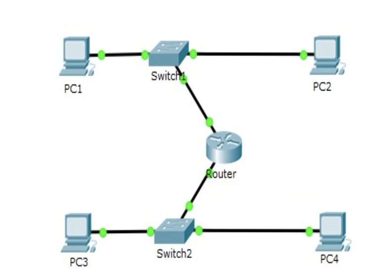
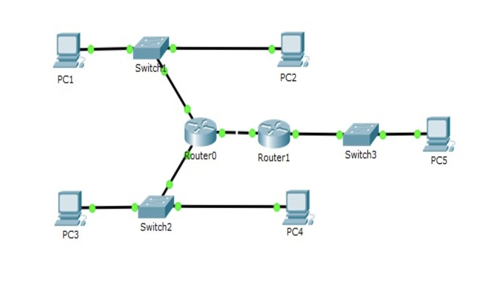

Лабораторная работа №1
Задачи:
- Зарегистрироваться на GitHub;
- Разработать личную страницу-отчет;
Выполнение работы:
- Создана страница пользователя на GitHub;
- Разработа страница-отчет;
Лабораторная работа №2
Задачи:
- Разработка веб-сайта для сервисного центра по ремонту цифровой техники.
Выполнение работы:
Команда Fanta
Группа ИДМ-19-01
Роли:
- Антонов И.М. - РП, СП, ПП.
- Смоленский В.Д. - ВН, БА, ПП
- Капустников В.А. - СП, КО, ПП.
Лабораторная работа №3
Задачи:
1. Выполнить задание в системе Cisco Packet Tracer.
2. Оформить отчёт на своей страничке.
Выполнение работы:
1. Был выбран вариант 4:

2. Создана сеть из двух компьютеров и коммутатора (Добавлена LAN A - subnet:10.1.255.0, mask:255.255.255.224):

h4>3. Создана сеть из четырёх компьютеров и двух коммутаторов (Добавлена LAN B - subnet:10.1.254.0, mask:255.255.255.0), Данная сеть не будет работать, т.к. для объединения разных сетей нужен маршрутизатор

h4>4. Создана сеть из четырёх компьютеров, двух коммутаторов и маршрутизатора:

h4>5. К существующей сети подключена дополнительная, включающая в себя коммутатор и компьютер (Добавлена LAN C - subnet:10.1.253.0, mask:255.255.255.0) :